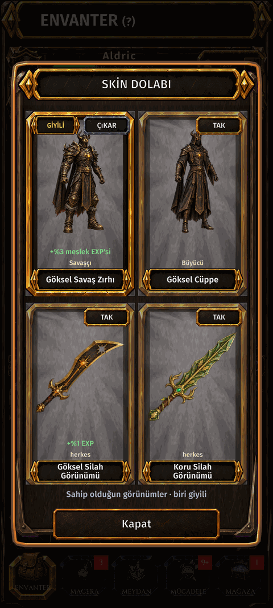

Skinler ve gardırop
Nedir
Skinler karakterinin ve silahının görünüşünü değiştirir. Sahip olduğun skinler gardıropta bekler; süreliler ne kadar kaldığını gösterir.
Nasıl gidilir
- ENVANTER.
- SKIN yuvasına dokun.

Skinler karakterinin ve silahının görünüşünü değiştirir. Sahip olduğun skinler gardıropta bekler; süreliler ne kadar kaldığını gösterir.
